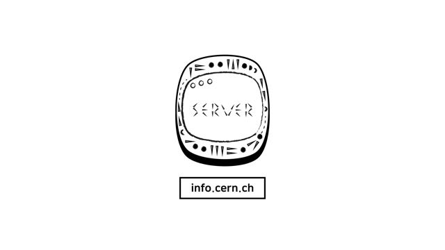

웹의 탄생은 스위스에서 일어났다.
웹은 1990년때 탄생했던 그 때와 다르게
굉장히 복잡해져있다. 당연하게도 28년이라는 시간과 함께 진화되었기 때문이다.
금융과 정밀기술이 발전한 부유한 국가인 스위스의 도시
제네바에는 CERN(유럽입자물리연구소)가 존재한다.
굉장한 천재들만 모여 있는 그 연구소에서
비정규직 프로그래머로 일 했던 팀 버너스리가 그곳에서
웹을 탄생시켰다.
1990년 10월 웹페이지를 편집하는 프로그램을 만들었고
11월에는 웹브라우저를 만듭니다. 이 웹 브라우저의 이름이
월드 와이드 웹 WWW입니다. 이 브라우저의 이름이
웹의 이름이 됩니다.
12월 24일에 웹서버를 완성해서
도메인 네임을 부여합니다.
웹의 첫 시작 사이트
메소포타미아와 같은 곳 info.cern.ch
가 그 도메인의 이름입니다.

웹을 만난 인터넷은 본격적인 대중화의 길을 걷게됩니다.
가능성으로 머물러있던 인터넷의 활약을
제대로 응용한 웹의 등장은
웹과 인터넷을 폭발적으로 동반성장 시켜 오늘날에 이르렀습니다.